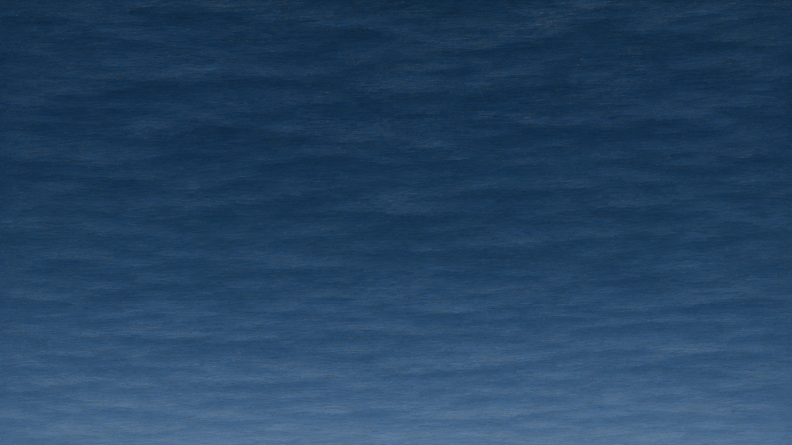
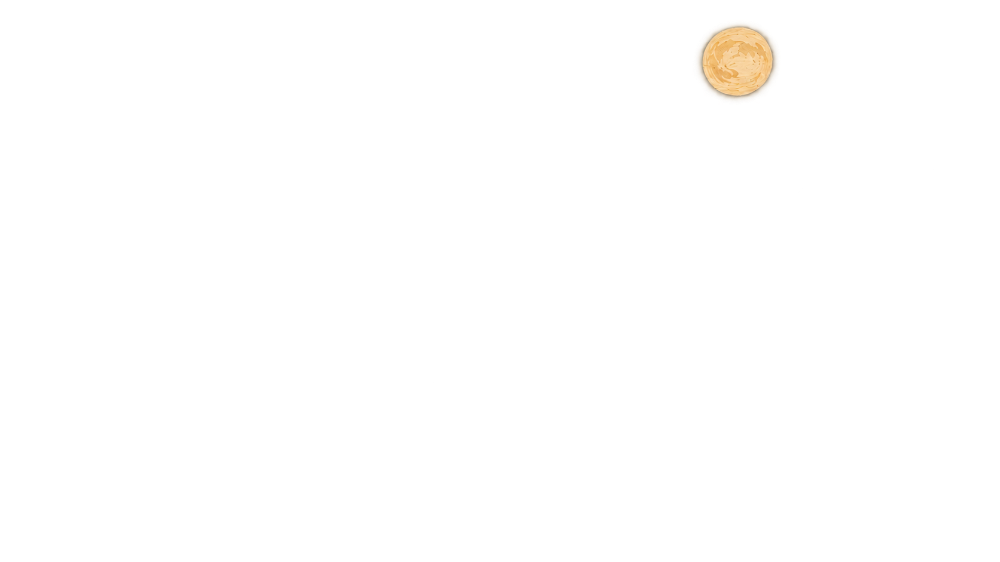
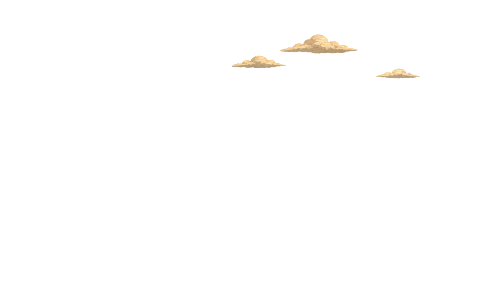
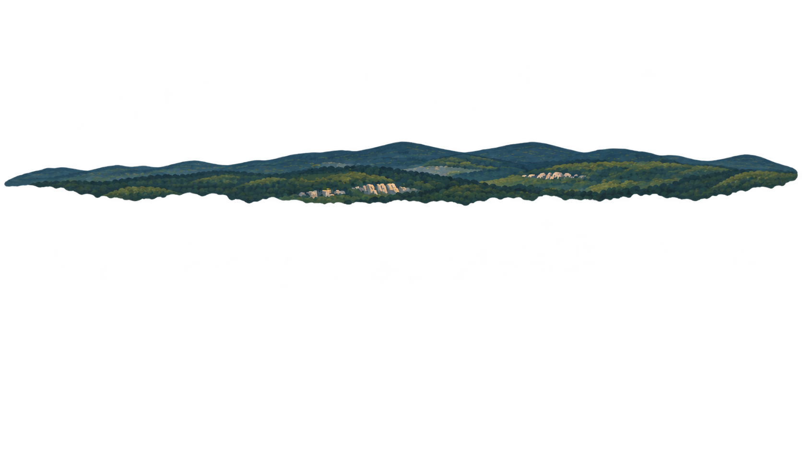
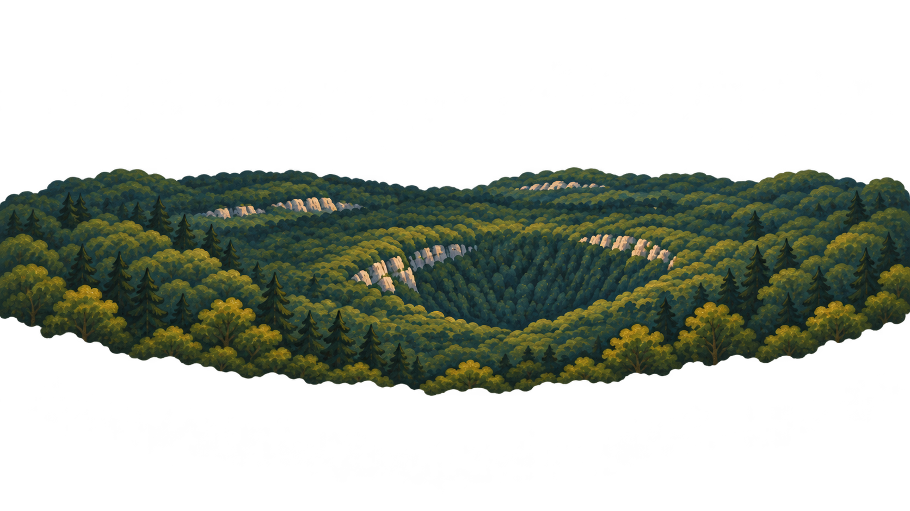
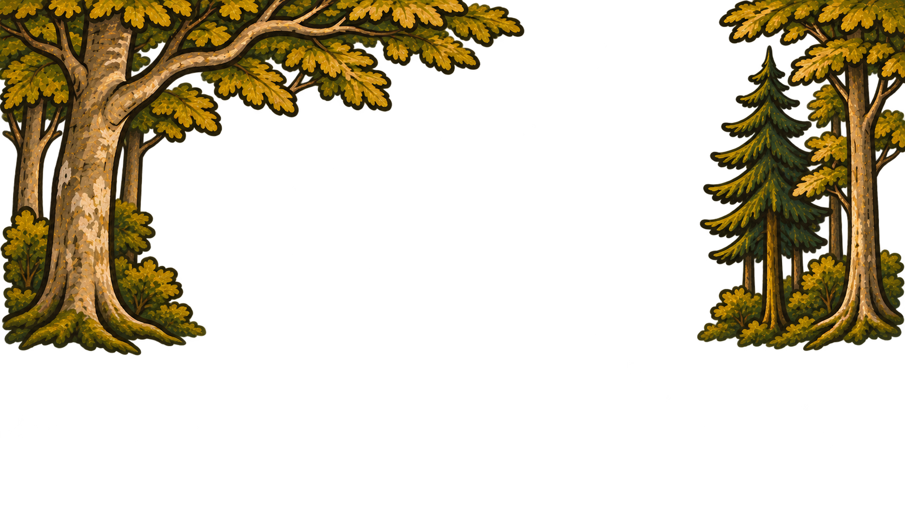
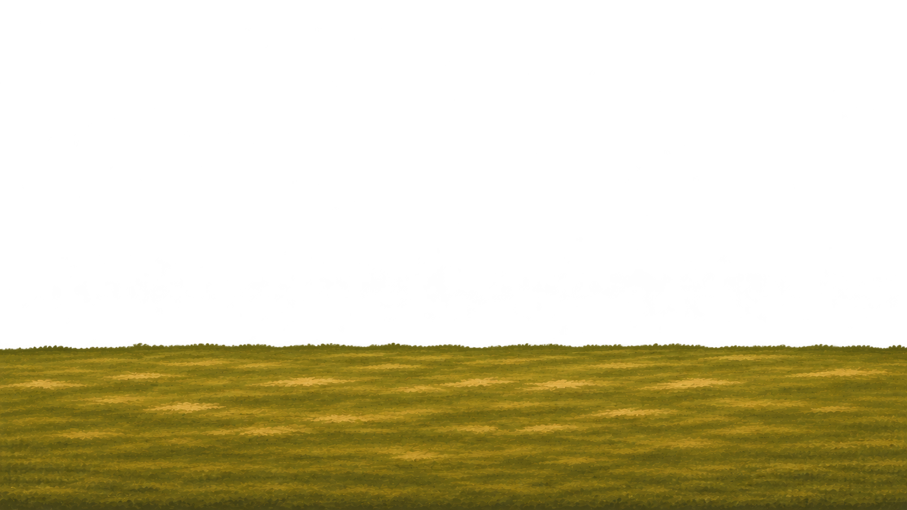
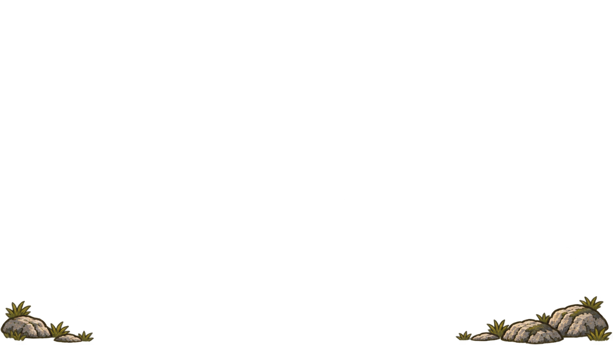
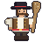
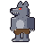

Along the grassy lane through Trnovski gozd
Scrub or play a rightward journey through the moonlit doline. The broad grass lane carries the party while the forest and close roadside details slide at different rates.










How the speeds work: the lane is the 1.0× reference. The close rocks and grass move at 1.25×, so they pass a little faster and feel nearer; framing trees move at 0.62×, the doline at 0.28×, the distant ridge at 0.12×, and the moon/clouds around 0.03×. These are first-pass art-direction ratios; reduce the foreground ratio if its drift feels detached from the ground.